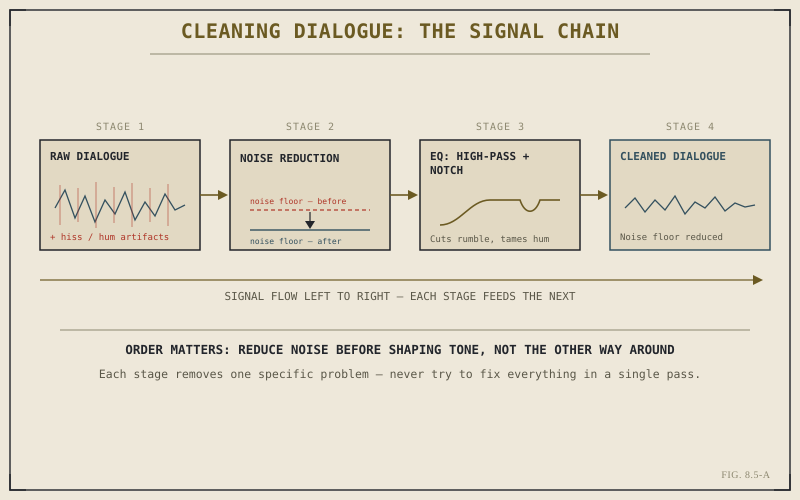

Chapter 8.4 established a loudness target. It quietly assumed clean source material to hit that target with — dialogue free of air conditioning hum, room tone, and the low rumble that production sound almost always carries in from the real world. That assumption rarely holds on its own. This chapter covers the cleanup pass nearly every dialogue track needs before it's genuinely mix-ready: noise reduction first, then EQ, in that specific order, for reasons that turn out to matter more than they first appear to.
Noise Isn't One Problem — It's a Category of Problems
Before reaching for a tool, it's worth being precise about what "noisy dialogue" actually means, because it covers several distinct things a single fix rarely handles equally well. Broadband hiss from a preamp or a camera's internal microphone sits differently in the frequency spectrum than a steady electrical hum from nearby power lines, which sits differently again from the low rumble of an air handler or passing traffic bleeding into a location recording. Fairlight's noise reduction tools are built to isolate this kind of broadband, relatively constant noise specifically — not to remove an unwanted word, a cough, or a one-off clatter, which are edit-page problems from Chapter 5.3's trim tools, not noise-reduction problems.
How Noise Reduction Actually Works
Most noise reduction tools, Fairlight's included, work from a noise profile: a short stretch of audio containing only the unwanted noise, with no dialogue present, which the tool analyzes to learn exactly what to suppress. Room tone recorded on set for precisely this purpose, or even a quiet gap between lines within the clip itself, works well as a profile. Once the tool has that profile, it can attenuate matching noise throughout the rest of the clip while leaving dialogue largely intact — imperfectly, since noise reduction is always a trade-off between how much noise is removed and how much the dialogue itself starts to sound processed, but a good profile makes that trade-off far more favorable.
Noise reduction needs to know what silence sounds like before it can find and remove it from everything else. A few clean seconds of room tone, given to the tool honestly, does more work than any amount of aggressive settings applied blind.
Why EQ Comes Second, Not First
Once broadband noise has been reduced, EQ — equalization, or reshaping a signal's balance across frequencies — handles what's left: tonal problems rather than noise problems. A high-pass filter, cutting everything below a chosen low frequency, removes the rumble and handling noise that sit below where dialogue actually lives, cleanly and with almost no audible cost, since almost nothing important to speech intelligibility happens down there. A narrow notch filter targets something more specific: a persistent electrical hum sitting at one exact frequency, cut out surgically rather than shaved off a wider range that would take dialogue clarity down with it.

Each stage removes exactly one kind of problem — running them in the wrong order makes both jobs harder.
The order matters specifically because EQ shapes tone across the entire signal, noise included. Applying an aggressive high-pass filter before noise reduction still leaves the noise reduction tool fighting whatever broadband hiss survives above that cutoff, while running noise reduction first gives EQ a genuinely cleaner signal to shape, with far less risk of the two tools working against each other or compounding artifacts neither would produce alone.
Restraint Is the Actual Skill Here
The most common mistake with both tools isn't using them incorrectly — it's using them too aggressively. Overdriven noise reduction produces a recognizable, hollow, underwater quality that's often more distracting than the original noise it removed, and an overly broad EQ cut can rob dialogue of the presence and clarity that make it intelligible in the first place. A useful habit: apply a setting, listen critically against the unprocessed original, and back it off until the fix is doing its job without announcing itself. Clean dialogue should sound like nothing was done to it at all, not like it was run through a processor.
Cleaned, EQ'd dialogue closes the gap between what production sound actually delivered and what the mix needs. Some material never closes that gap no matter how much cleanup it gets — a location too noisy to salvage, a performance that needs to change entirely. Chapter 8.6 covers what happens then: replacing dialogue outright through ADR, and building sound effects from scratch through Foley.
Key Concepts to Remember
- Noise reduction targets broadband, constant noise like hiss and hum — not one-off sounds, which are trim and blade problems instead.
- A clean noise profile, taken from room tone or a quiet gap, is what makes noise reduction work well rather than sound processed.
- Run noise reduction before EQ — shaping tone on an already-noisy signal makes both the noise and the fix harder to manage.
- Restraint is the real skill — overdriven noise reduction and overly broad EQ cuts are usually more noticeable than the problem they fixed.
Cross-References Forward
| → Ch. 8.6 | ADR, Foley, and Sound Replacement Workflow — what to do when cleanup alone can't save the original recording. |
| → Ch. 5.3 | Revisit ripple, roll, slip, and slide — the tools for one-off sound problems noise reduction isn't built to solve. |
| → Ch. 8.4 | Revisit loudness targets, the destination this chapter's cleanup pass is ultimately preparing dialogue to reach. |